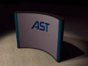

|
 One of the best ways to obtain visibility, increase credibility, gather qualified leads and make personal contact with customers is to exhibit at trade shows. Through the AST Ovation! Program, Ovation! Gold Resellers participate in regional trade show events with AST. The Trade Show Program includes a complete package of materials and on-site support at the event, which makes participation in trade shows easy. AST will develop an event calendar each quarter. Ovation! Gold Resellers will be contacted for participation by their regional sales representative. The AST Ovation! Trade Show Program kit includes:
The Ovation! Trade Show Program kit is available at no cost to Ovation! Gold Resellers. Ovation! Gold Resellers are required to pay a fully refundable security deposit of $1,000 on the trade show booth. The Ovation! Gold Reseller must complete the online trade show agreement form including security deposit payment information. Completed forms may be faxed to (714) 727-7630. The Trade Show Program kit is subject to current availability. Requests are completed on a first come, first served basis. Trade show booths must be returned to AST complete and in good working condition. The Ovation! Gold Reseller must contact AST within 72 from the close of the show to arrange pick-up of the booth, or ship the booth back to AST using show management shipping services. If the trade show booth is returned to AST damaged beyond normal wear and tear, the Ovation! Gold Reseller will be charged for all repairs. Payment for repairs will be deducted from the deposit. The Ovation! Gold Reseller will receive a statement of charges. Once the trade show booth is received and in good working order, the deposit will be returned to the reseller. Checks are issued within 15 days of receipt of the trade show booth. For orders using FlexFunds or AST Allowance funds, refunds will be issued as a credit to the FlexFunds or AST Allowance account. The credit will be reflected on the following months statement. Ordering Procedure The Ovation! Gold Reseller must complete the Online Trade Show Agreement Form. Forms and payment must be received at least 15 business days before the booth is needed. AST cannot guarantee delivery in time for the show if the agreement is received less than 15 business days before the show. Ovation! Gold Resellers may use either FlexFunds, AST Allowance funds, cashier's check or credit card (Visa, MasterCard or American Express) for payment. AST selects the carrier and method of shipment. Standard lead times apply. In the case that the Ovation! Gold Reseller must use an alternate carrier, the Ovation! Gold Reseller will be responsible for freight charges. AST will ship the booth freight collect to the Ovation! Gold Reseller. Trade Show Booth Return Procedures The trade show booth Return Authorization Number (RAN) with shipping instructions and the due date to contact AST, are included in your trade show booth shipping container. All relevant RAN material and labels must be attached to the trade show booth shipping container. The Ovation! Reseller must call (800) 330-5885 to arrange pick-up of
the booth within 72 hours of the close of the trade show, or use shipping
services provided by the trade show management. |